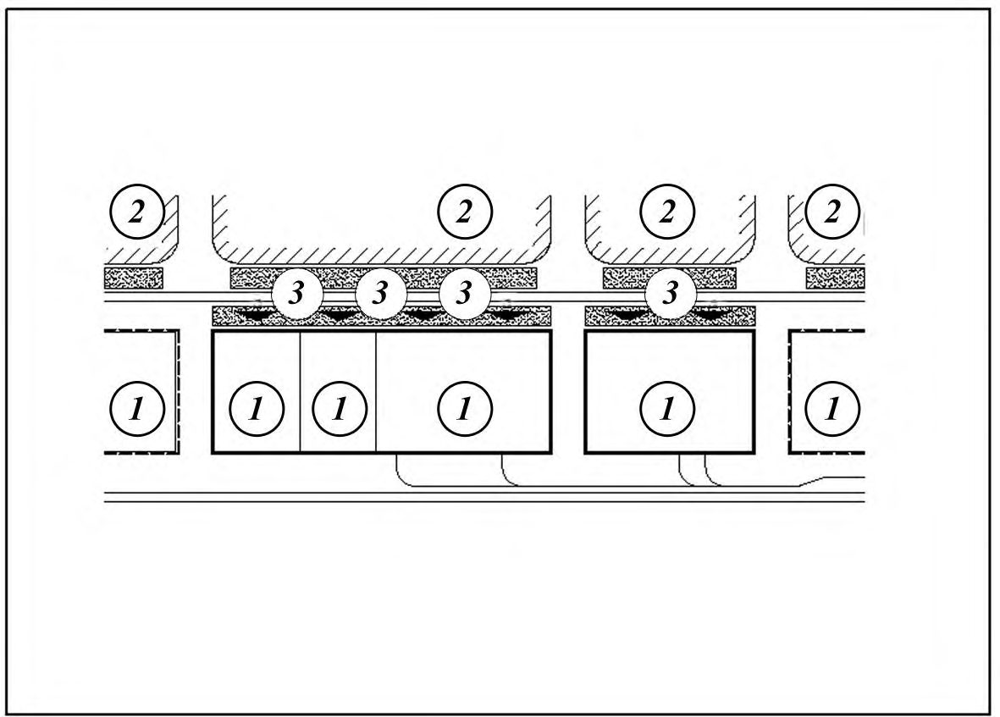
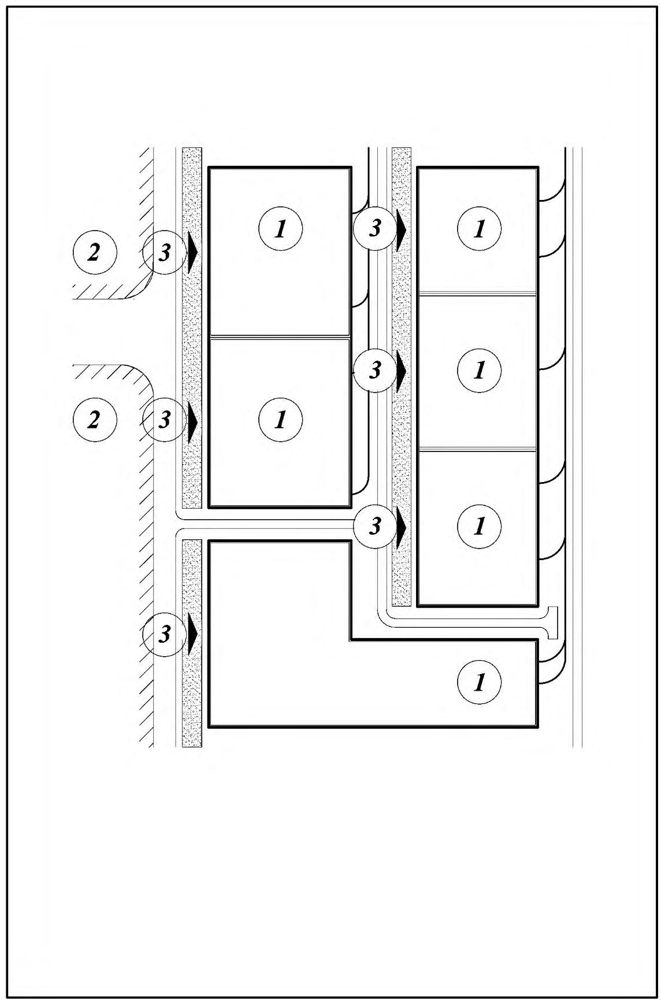
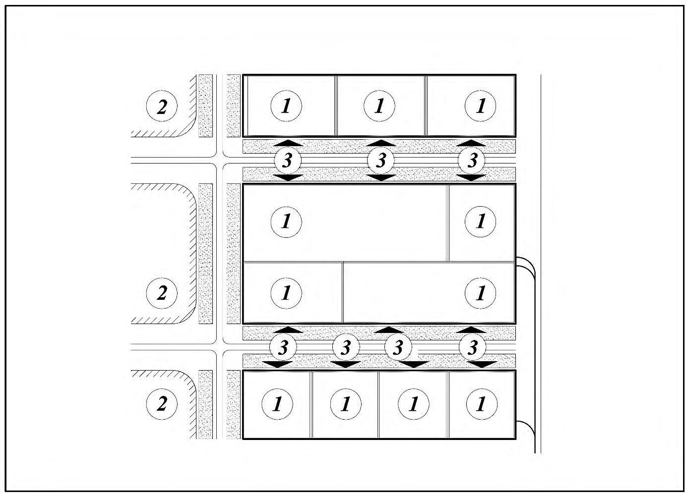

СП 348.1325800.2017 «Индустриальные парки и промышленные кластеры. Правила проек»
О документе: разработчики, утверждение, регистрация, ключевые слова
- 1 ИСПОЛНИТЕЛЬ -Акционерное общество «Центральный научноисследовательский и проектно-экспериментальный институт промышленных зданий и сооружений»
- 2 ВНЕСЕН Техническим комитетом по стандартизации ТК 465 «Строительство»
- 3 ПОДГОТОВЛЕН К УТВЕРЖДЕНИЮ Департаментом градостроительной деятельности и архитектуры Министерства строительства и жилищно-коммунального хозяйства Российской Федерации (Минстрой России)
- 4 УТВЕРЖДЕН приказом Министерства строительства и жилищнокоммунального хозяйства Российской Федерации (Минстрой России) от 21 сентября 2017 г. № 1240/пр и введен в действие с 22 марта 2018 г.
- 5 ЗАРЕГИСТРИРОВАН Федеральным агентством по техническому регулированию и метрологии (Росстандарт)
- 6 ВВЕДЕН ВПЕРВЫЕ
В случае пересмотра (замены) или отмены настоящего свода правил соответствующее уведомление будет опубликовано в установленном порядке. Соответствующая информация, уведомление и тексты размещаются также в информационной системе общего пользования на официальном сайте разработчика (Минстрой России) в сети Интернет
© Минстрой России, 2017
Настоящий нормативный документ не может быть полностью или частично воспроизведен, тиражирован и распространен в качестве официального издания на территории Российской Федерации без разрешения Минстроя России
Дата введения 2018-03-22
УДК
] ОКС 91.040.10
Ключевые слова: индустриальные парки, промышленные кластеры, территориальный промышленный кластер, промышленная инфраструктура, инженерная инфраструктура, транспортная инфраструктура, размещение производственых объектов, планировка и застройка территории, квартал, красные линии
ИСПОЛНИТЕЛЬ
АО «ЦНИИПромзданий»
Наименование организации
Руководитель разработки Генеральный директор В.В.Гранев
Ответственный исполнитель зам.генерального директора Д.К.Лейкина
СП .1325800.2017
Введение
Настоящий свод правил разработан в соответствии с требованиями Федеральных законов от 31 декабря 2014 г. № 488-ФЗ «О промышленной политике в Российской Федерации» [1], от 28 июня 2014 г. № 172-ФЗ «О стратегическом планировании в Российской Федерации» [2], от 30 декабря 2009 г. № 384-ФЗ «Технический регламент о безопасности зданий и сооружений» [3], от 23 ноября 2009 г. № 261-ФЗ «Об энергосбережении, повышении энергетической эффективности и о внесении изменений в отдельные законодательные акты Российской Федерации» [4], от от 27 декабря 2002 г. № 184-ФЗ «О техническом регулировании» [5], СП 42.13330.
Настоящий свод правил разработан авторским коллективом АО «ЦНИИпромзданий» (руководитель работы - д-р техн. наук В.В.Гранев , ответственный исполнитель - канд. архитектуры Д.К.Лейкина ; исполнители: канд. техн. наук Т.Е. Стороженко , архитектор Ю.В. Моторина .
1Область применения
2Нормативные ссылки
- В настоящем своде правил использованы нормативные ссылки на следующие документы:
- ГОСТ 12.3.002-2014 Процессы производственные Общие требования безопасности
ГОСТ 52398-2005 Классификация автомобильных дорог. Основные параметры и требования
ГОСТ Р 53247-2009 Техника пожарная. Пожарные автомобили. Классификация, типы и обозначения
- ГОСТ Р 54531-2011 Нетрадиционные технологии. Возобновляемые и альтернативные источники энергии. Термины и определения
ГОСТ Р 56301-2014 Индустриальные парки. Требования
- СП 10.13130.2009 Системы противопожарной защиты. Внутренний противопожарный водопровод. Требования пожарной безопасности (с изменением № 1)
- СП 11.13130.2009 Места дислокации подразделений пожарной охраны. Порядок и методика определения (с изменением № 1)
- СП 14.13330.2014 «СНиП II-7-81* Строительство в сейсмических районах» (с изменением № 1)
- СП 18.13330.2011 «СНиП II-89-80* Генеральные планы промышленных предприятий» (с изменением № 1)
- СП 31.13330.2012 «СНиП 2.04.02-84* Водоснабжение. Наружные сети и сооружения» (с изменениями № 1, № 2)
СП 32.13330.2012 «СНиП 2.04.03-85 Канализация. Наружные сети и сооружения»
Industrial parks and indastrial clusters. Desing rules
СП .1325800.2017
(с изменением № 1)
- СП 34.13330.2012 «СНиП 2.05.02-85* Автомобильные дороги» (с изменением №1)
- СП 42.13330.2016 «СНиП 2.07.01-89* Градостроительство. Планировка и застройка городских и сельских поселений»
- СП 44.13330.2011 «СНиП 2.09.04-87 Административные и бытовые здания» (с изменением № 1)
- СП 51.13330.2011 «СНиП 23-03-2003 Защита от шума» (с изменением № 1)
- СП 54.13330.2016 «СНиП 31-01-2003 Здания жилые многоквартирные»
- СП 55.13330.2016 «СНиП 31-02-2001 Дома жилые одноквартирные»
- СП 56.13330.2011 «СНиП 31-03-2001 Производственные здания» (с изменением № 1)
- СП 58.13330.2012 «СНиП 33-01-2003 Гидротехнические сооружения. Основные положения» (с изменением № 1)
- СП 59.13330.2016 «СНиП 35-01-2001 Доступность зданий и сооружений для маломобильных групп населения»
- СП 78.13330.2012 «СНиП 3.06.03-85 Автомобильные дороги» (с изменением № 1)
- СП 82.13330.2016 «СНиП III-10-75 Благоустройство территорий»
- СП 112.13330.2011 «СНиП 21-01-97* Пожарная безопасность зданий и сооружений»
- СП 113.13330.2016 «СНиП 21-02-99* Стоянки автомобилей»
- СП 118.13330.2012 «СНиП 31-06-2009 Общественные здания и сооружения» (с изменениями № 1, № 2)
- СП 121.13330.2012 «СНиП 32-03-96 Аэродромы»
- СП 132.13330.2011 Обеспечение антитеррористической защищенности зданий и сооружений. Общие требования проектирования
- СП 134.13330.2012 Системы электросвязи зданий и сооружений. Основные положения проектирования
- СП 136.13330.2012 Здания и сооружения. Общие положения проектирования с учетом доступности для маломобильных групп населения» (с изменением № 1)
- СП 139.13330.2012 Здания и помещения с местами для труда инвалидов (с изменением № 1)
- СП 140.13330.2012 Городская среда. Правила проектирования для маломобильных групп населения (с изменением № 1)
- СП 232.1311500.2015 Пожарная охрана предприятий. Общие требования
- СП 248.1325800.2016 Сооружения подземные. Правила проектирования
- СП 256.1325800.2016 Электроустановки жилых и общественных зданий. Правила проектирования и монтажа
- СанПиН 2.2.1/2.1.1.1200-03 Санитарно-защитные зоны и санитарная классификация предприятий, сооружений и иных объектов (с изменениями № 1, № 2, № 3, № 4)
- ОК 029-2001 Общероссийский классификатор видов экономической деятельности (ОКВЭД)
Примечание - При пользовании настоящим сводом правил целесообразно проверить действие ссылочных документов в информационной системе общего пользования - на официальном сайте федерального органа в области стандартизации в сети Интернет или по ежегодному информационному указателю «Национальные стандарты», который опубликован по состоянию на 1 января текущего года, и по выпускам ежемесячного информационного указателя «Национальные стандарты» за текущий год. Если заменен ссылочный документ, на который дана недатированная ссылка, то рекомендуется использовать действующую версию этого документа с учетом всех внесенных в данную версию изменений. Если заменен ссылочный документ, на который дана датированная ссылка, то рекомендуется использовать версию этого документа с указанным выше годом утверждения (принятия). Если после утверждения настоящего стандарта в ссылочный документ, на который дана датированная ссылка, внесено изменение, затрагивающее положение, на которое дана ссылка, то это положение рекомендуется применять без учета данного изменения. Если ссылочный документ отменен без замены, то положение, в котором дана ссылка на него, рекомендуется применять в части, не затрагивающей эту ссылку. Сведения о действии сводов правил целесообразно проверить в Федеральном информационном фонде стандартов.
3Термины и определения
В настоящем своде правил применяются термины по ГОСТ Р 56301, СП 18.13330, СП 42.13330, СП 59.13330 и [1], а также следующие термины с соответствующими определениями:
- 3.1безопасность (здесь )
- Компексное инженерно-техническое решение объектов, обеспечивающее их устойчивость в условиях внутренних и внешних воздействий.
- 3.2граница территории индустриального парка, территориального промышленного кластера (здесь)
- Законодательно установленная линия, отделяющая территорию индустриального парка и территориального промышленного кластера от территориальных участков иного назначения.
- 3.3земельный участок (здесь)
- Застроенная или подлежащая застройке территория индустриального парка и территориального промышленного кластера с законодательно установленными границами земельного участка, с режимом целевого функционального и технологического использования.
- 3.4индустриальный парк (здесь)
- Группа предприятий одной или нескольких отраслей промышленности, размещенных на отведенном под строительство земельном участке производственных зон городских и сельских поселений, объединенных общей границей с системой транспортных и инженерных коммуникаций, включая систему социально-бытового и других видов обслуживания.
- 3.5инженерная инфраструктура ( здесь )
- Система инженерных коммуникаций и сооружений водоснабжения, водоотведения, тепло-, электро- и газоснабжения, связи, необходимая для жизнеобеспечения предприятий индустриального парка и территориального промышленного кластера.
- 3.6квартал ( здесь )
- Планировочная единица застройки индустриального парка и территориального промышленного кластера, предназначенная для размещения производственных, научно-исследовательских, образовательных, жилых и иных объектов.
- 3.7кластерный подход
- Формирование производственных территорий городских и сельских поселений на основе кооперации производственных, научноисследовательских, образовательных и жилых объектов в создании конечного промышленного продукта.
- 3.8кластерная система
- Система, обеспечивающая благоприятные условия для инновационного развития различных отраслей промышленности на основе создания промышленных кластеров.
- 3.9красная линия ( здесь )
- Граница застройки земельных участков кварталов индустриальных парков и территориальных промышленных кластеров
- 3.10отрасль промышленности ( здесь )
- Одна или несколько классификационных группировок одного или нескольких видов экономической деятельности в соответствии с Общероссийским классификатором видов экономической деятельности.
- 3.11промышленная инфраструктура ( здесь )
- Совокупность транспортной и инженерной инфраструктур, необходимых для инновационной деятельности объектов в границах территориального промышленного кластера, размещенных вне красных линий кварталов.
- 3.12промышленный кластер ( здесь )
- Совокупность субъектов деятельности в сфере промышленности (предприятия, поставщики оборудования, комплектующих, сервисных услуг, научно-исследовательские и образовательные организации), с различной степенью территориальной близости, технологически связанных между собой в указанной сфере, вследствие функциональной зависимости и размещенных на территории одного субъекта Российской Федерации или на территориях нескольких субъектов Российской Федерации.
- 3.13территориальный промышленный кластер
- Территориальная единица промышленного кластера с функционально-технологической организацией земельного участка, обеспечивающая инновационное развитие производственных, научно-исследовательских и образовательных объектов в границах отведенной территории и технологически связанная с субъектами деятельности промышленного кластера в целом.
- 3.14транспортная инфраструктура ( здесь )
- Система транспортных коммуникаций и сооружений вне границ красных линий кварталов индустриального парка и территориального промышленного кластера, предназначенная для обеспечения движения и хранения транспортных средств, в том числе, автомобильные дороги, железнодорожные пути, тоннели, эстакады, мосты, переезды, путепроводы.
- 3.15функционально-планировочная организация индустриального парка и территориального промышленного кластера
- Система кварталов индустриального парка, территориального промышленного кластера, связаная в единую архитектурно-планировочную систему транспортными коммуникациями.
- 3.16функционально-технологическое зонирование индустриального парка и территориального промышленного кластера
- Зонирование территории с учетом взаимных технологических связей производственных, научноисследовательских и образовательных объектов и промышленной инфраструктуры.
4Общие положения
Размещение индустриальных парков и промышленных кластеров следует устанавливать в соответствии с [2] и [6], СП 42.13330 и СанПиН 2.2.1/2.1.1.1200.
- муниципальный;
- региональный;
- национальный.
Формирование промышленных кластеров и освоение перспективных территорий следует осуществлять в соответствии с [6, глава 2]. Характеристики типов промышленных кластеров приведены в приложении А.
При этом следует учитывать перспективы развития близлежащих городских и сельских поселений, решения их функционального зонировани, планировочной структуры, инженерной и транспортной инфраструктур, рационального использования природных ресурсов и охраны окружающей среды.
- инфраструктурное и ресурсное обеспечение территории и оценку объемов капитальных затрат на создание объектов промышленной инфраструктуры в зависимости от классификации промышленного кластера;
- состав и основные технико-экономические показатели производственных объектов, транспортной и инженерной инфраструктур индустриального парка;
- характеристику по числу, составу и технико-экономичским показателям каждого из кварталов, очередность освоения;
- прогнозируемые показатели потребления энергетических и других видов ресурсов.
При отсутствии таких земель, при соответствующем обосновании, могут использоваться участки на землях сельскохозяйственного назначения в соответствии с [8].
Следует обеспечивать минимальную протяженность примыкания участка территории индустриальных парков и промышленных кластеров к водоемам в соответствии с [9].
При устройстве отвалов, шлаконакопителей, хвостохранилищ, отходов и отбросов в границах кварталов производственных объектов, входящих в состав индустриальных парков и промышленных кластеров следует соблюдать СП 18.13330.
- на вновь отведенных земельных участках производственных зон городских и сельских поселений, обеспеченных частично или в полном объеме промышленной инфраструктурой;
- на вновь отведенных земельных участках , производственных зон городских и сельских поселений не обеспеченных промышленной инфраструктурой;
- на землях ранее существующих производственных зон городских и сельских поселений, в отношении которых проводится реконструкция или капитальный ремонт.
Размещение таких объектов следует осуществлять в соответствии с СП 248.1325800.
Планировку и застройку кварталов с научно-исследовательскими, образовательными объектами следует проектировать в соответствии с СП 42.13330 и СП 118.13330.
Проектирование кварталов с жилой застройкой в границах промышленных кластеров допускается при размещении в них предприятий классов опасности I-III согласно СанПиН 2.2.1/2.1.1.1200. Планировку и застройку жилых кварталов следует осуществлять согласно СП 42.13330, СП 54.13330 и СП 55.13330.
- уклоны тротуаров в соответствии с СП 136.13330;
- минимальное число их пересечений с путями движения транспорта;
- оборудованные светофорами со звуковым сигналом места пересечения с путями движения транспорта, места приближения тротуаров к препятствиям согласно СП 140.13330.
СП .1325800.2017
Места для стоянки личных транспортных средств (автомобилей) инвалидов должны быть выделены разметкой и обозначены специальными символами. Ширину стоянки для автомобиля инвалида следует принимать согласно СП 59.13330 и СП 113.13330.
5Требования к проектированию территории индустриальных парков и территориальных промышленных кластеров
Индустриальные парки
- возможность кооперации объектов инженерного обеспечения: хозяйственнопитьевого водоснабжения, хозяйственно-бытовой канализации, электроснабжения, теплоснабжения, газоснабжения, связи и т. п.;
- объединение системы культурно-бытового обслуживания;
- единcтво с транспортной системой городских и сельских поселений;
- разделение грузового и пассажирского движения, создание системы пешеходных и велосипедных дорог; размещение остановок общественного транспорта, исходя из рационального обслуживания работающих и в соответствии с СП 42.13330;
- рациональную организацию пешеходных и транспортных потоков к местам приложения труда, минимизацию расстояний от точек подключения систем жизнеобеспечения до потребителей;
- формирование архитектурного облика зданий и сооружений, исходя из общего объемно-пространственного решения застройки индустриального парка в целом.
Состав мощность и условия размещения учреждений всех видов принимать с учетом существующих видов обслуживания на предприятиях.
- при соответствии подземного размещения требованиям технологии производства -предприятия по изготовлению светочувствительных материалов, холодильники, охлаждаемые хранилища; производства, не допускающие вибрацию;
- при отсутствии необходимости в естественном освещении для функционирования производств и небольшом по времени (периодическом) пребывании обслуживающего персонала - склады сырья, готовой продукции, комплектующих изделий и материалов; архивы; помещения инженерно-технического обслуживания; трансформаторные подстанции (с сухими трансформаторами), электрораспределительные устройства, пункты теплогазоснабжения, очистные сооружения, насосные, гаражи; полностью автоматизированные производства.
- при размещении помещений общественного назначения в подземных этажах без естественного освещения в соответтвии с требованиями СП 52.13330 и СП 118.13330.
При формировании монопрофильных индустриальных парков следует обеспечивать кооперацию предприятий, утилизацию отходов и др.
Плотность застройки кварталов, занимаемых предприятиями и иными объектами, следует принимать в соответствии с 8.4 СП 42.13330.2016 и СП 18.13330.
Территориальные промышленные кластеры
Для нового строительства размеры кварталов следует принимать исходя из модульного принципа разбивки территории на основе функционально-технологического зонирования, в соответствии с заданием на проектирование.
Примечания
- 1 Занятость территории по СП 42.13330 (далее коэффициент использования территории) не должен превышать значений, приведенных в приложении Е.
- 2 В условиях реконструкции размеры кварталов следует принимать по заданию на проектирование.
- функционально-технологического зонирования территории;
- функционально-планировочной структуры;
- оптимальной транспортной и пешеходной доступности производственных и иных объектов с объектами промышленной инфраструктуры;
- архитектурной выразительной застройки зданий и сооружений.
- научные - для размещения кварталов научно-исследовательских учреждений, исследовательских центров и конструкторских бюро по разработке инновационных проектов;
- образовательные - для размещения учебных центров, связанных с подготовкой специалистов для разработки и реализации инновационных проектов;
- инновационные - для размещения призводственных объектов, осуществляющих поиски (исследования) приоритетных направлений инновационных проектов и обеспечивающих их стартовое развитие;
- жилые - для размещения жилой застройки для временного и постоянного проживания работающих в территориальном промышленном кластере с учетом требований 4.13 и СП 42.13330;
- объекты промышленной инфраструктуры.
- культурно-массовое (клубные учреждения с библиотеками, спортивные сооружения и площадки);
- медицинское (поликлиники, здравпункты предприятий, станции скорой помощи, аптеки и др.);
- общественное питание (заготовочные предприятия, рестораны, кафе, закусочные, столовые и буфеты);
- торговое и сервисное обслуживание (магазины, комбинаты бытового обслуживания и их приемные пункты, ателье по пошиву одежды, прачечные и химические чистки, мастерские по ремонту одежды и обуви, отделения связи и сберегательные кассы и др.).
6Требования к проектированию транспортной и инженерной инфраструктур индустриальных парков
Транспортная инфраструктура
- В траспортную инфраструктуру следует включать транспортные коммуникации, объединяющие и обслуживающие кварталы индустриальных парков.
Инженерная инфраструктура
- наличие на территории точек присоединения к электрическим сетям или наличие технических условий на технологическое присоединение;
- наличие существующего подключения или технических условий на подключение к сетям газоснабжения и/или наличие существующего подключения или технических условий на подключение к сетям теплоснабжения;
- наличие существующего подключения или технических условий на подключение к системе водоснабжения и водоотведения.
СП .1325800.2017
- энергия солнца;
- энергия ветра;
- энергия вод (в том числе энергия сточных вод);
- энергия приливов;
- геотермальная энергия с применением природных подземных геотермальных вод, пара;
- низкопотенциальная тепловая энергия земли, воздуха, воды;
- отходы производства и потребления, за исключением отходов, полученных в процессе применения углеводородного сырья и топлива;
- биогаз;
- газ, выделяемый отходами производства и потребления на полигонах таких отходов.
Размещение сооружения источника тепла индустриального парка следует проектировать с учетом обеспечения минимизации длины коммуникаций до всех потребителей индустриального парка.
Для предприятий, в которых не допускаются перерывы в подаче тепла, следует предусматривать дублированные или кольцевые схемы тепловых сетей.
7Требования к проектированию промышленной инфраструктуры
территориального промышленного кластера
- транспортную;
- инженерную;
- социально-бытовую.
Транспортную и инженерную инфраструктуры следует проектировать по 6.16.17.
Социально-бытовая инфраструктура
- организацию обслуживания на основе максимального блокирования;
- размещение объектов обслуживания с учётом минимальных затрат времени работающих для их доступности.
- 1 ступень - цеховое обслуживание (обслуживание вблизи рабочих мест внутри зданий и сооружений);
- 2 ступень - общеобъектное обслуживание (обслуживание в пределах кварталов объектов)
- 3 ступень - групповое обслуживание (обслуживание территориального промышленного кластера в целом).
- общественное питание (повседневное пользование);
- медико-профилактическое (периодическое пользование);
- обучение (периодическое пользование);
- культурно-массовое (эпизодическое пользование);
- коммунально - хозяйственное (повседневное пользование).
- 1000-1500 м - для объектов повседневого пользования;
- 1500-2000 м - для объектов периодического пользования;
- 2000-3000 м - для объектов эпизодического пользования.
Благоустройство свободной от застройки территории промышленной инфраструктуры следует проектировать в соответствии с СП 82.13330.
Благоустройство и озеленение территории следует проектировать с учетом санитарных и эксплуатационных требований производственных объектов, размещенных в территориальном промышленном кластере.
- устройство дорог, тротуаров и площадок с твердым покрытием;
- посадку деревьев и кустарников;
- устройство газонов и цветников;
- оформление пешеходных зон малыми архитектурными формами (скамьи, урны, цветочницы).
Основные виды озеленения:
- газоны, кустарники, групповые посадки деревьев на земельных участках кварталов;
- газоны с линейной посадкой деревьев и кустарников, обладающих шумо- и пылезащитными качествами вдоль транспортных магистралей с учетом прокладки инженерных коммуникаций.
8Инженерное оборудование зданий и сооружений индустриальных парков и промышленных кластеров
9Требования к предприятиям, использующим безотходную технологию
- все производственные процессы должны осуществляться при минимальном числе технологических этапов;
- технологические процессы должны быть непрерывными;
- организация на всех производствах замкнутого цикла водоснабжения с применением в оборотной системе очищенных хозяйственно-бытовых и производственных стоков;
- использование выделяющейся в различных технологических процессах тепловой энргии для теплоснабжения зданий и сооружений;
- обезвреживание, переработка и утилизация твердых коммунальных отходов;
- оптимальное ведение технологических процессов с минимальным выходом вредных веществ за счет максимального использования автоматических систем управления.
Перечень отраслей промышленности, применяющих безотходную (малоотходную) технологию производства приведен в приложении К.
10Обеспечение безопасности. Противопожарные требования
Приоритетными должны быть меры предупреждения, направленные на своевременное выявление тенденций и предпосылок, способствующих развитию угроз, на основе анализа которых вырабатываются соответствующие профилактические меры по недопущению их возникновения.
- функциональное назначение размещаемых производственных и других объектов, технологические особенности которых влияют на их безопасность, а также классификаторами в соответствии с [12];
- возможность опасных природных процессов и явлений и техногенных воздействий на территории индустриальных парков и промышленных кластеров в соответствии с районированием территории Российской Федерации по уровню опасности природных процессов и явлений [11], утвержденным уполномоченным федеральным органом исполнительной власти, данными многолетних наблюдений за природными процессами и явлениями, проводимых в соответствии с законодательством Российской Федерации, а также результатами инженерных изысканий на территории, на которой будут осуществляться строительство, реконструкция и эксплуатация зданий и сооружений;
- принадлежность к опасным производственным объектам в соответствии с законодательством Российской Федерации в области промышленной безопасности [11];
- пожарную и взрывопожарную опасность в соответствии с законодательством Российской Федерации в области пожарной безопасности [13], СП 112.13330.
- технических средств наблюдения, контроля, идентификации (охраннопожарных систем, видео-радиоаппаратуры, средств обнаружения взрывных устройств, заграждения и т.д);
- интеллектуальных средств для внедрения новых систем безопасности.
- локальных систем автоматики и диспетчеризации зданий и сооружений;
- локальных систем безопасности зданий и сооружений;
- аварийных систем, контролирующих производственные процессы;
- систем мониторинга окружающей среды;
- геоинформационных систем;
- телефонных диспетчерских центров;
- локальных и глобальных средств связи и телевещания;
- информационных, расчетных, учетных и аналитических программных продуктов.
- контролировать работу аварийных объектовых систем;
- сосредоточить необходимые средства в нужном месте;
- организовывать оперативное взаимодействие объектовых и городских служб, привлеченных к ликвидации ЧС;
- осуществлять управление системами оповещения и эвакуации.
Число и места дислокации подразделений пожарной охраны на территории определяются на основании расчетного определения максимально допустимого расстояния от объекта предполагаемого пожара до ближайшего пожарного депо, определения пространственных зон размещения пожарного депо для каждого объекта предполагаемого пожара и областей пересечения указанных пространственных зон для всей совокупности объектов предполагаемого пожара.
11Охрана окружающей среды
Планировку и застройку новых и реконструируемых индустриальных парков и промышленных кластеров следует разрабатывать с учетом максимального сохранения существующего ландшафта.
- экологически рациональное размещение производственных объектов, промышленной инфраструктуры;
- разработка экологичных ресурсоэффективных объемно-планировочных и конструктивных решений зданий и сооружений;
- применение экологически чистых строительных материалов;
- применение малоотходных и безотходных технологических процессов и производств;
- применение очистных и обезвреживающих сооружений и устройств.
Расчет прогнозируемого шума следует проводить в соответствии с СП 51.13330, [17].
- гидроизоляцию заглубленных частей фундаментов зданий и сооружений во избежание агрессивного воздействия на них подземных вод;
- устройство водонепроницаемых покрытий на технологических площадках, проездах и стоянках для машин;
- устройство дождевой канализации с применением дождеприемных колодцев для сбора поверхностных сточных вод с последующей подачей на очистные сооружения;
- сбор и отведение хозяйственно-бытовых сточных вод в коммунальные сети канализации с последующей очисткой на городских очистных сооружениях;
- укладку подземных канализационных сетей на утрамбованное дно траншей с тщательной заделкой стыков труб и герметизацией мест соединения с канализационными колодцами;
- гидроизоляцию и герметизацию подземных сооружений и технологических инженерных сетей, исключающих инфильтрацию и протечки;
- применение современного технологического оборудования, соответствующего экологическим требованиям;
- организацию системы обращения с отходами классов опасности I-V;
- организацию мест временного накопления отходов с соблюдением экологических, санитарных, противопожарных требований;
- благоустройство и озеленение территории;
- регулярный контроль за работой систем дождевой и хозяйственно-бытовой канализации и принятие своевременных и эффективных мер, исключающих застаивание сточных вод в подземных водонесущих коммуникациях.
Для контроля за осадками следует предусматривать геотехнический мониторинг.
АПриложение А. Типы промышленных кластеров
| Тип промышленного | Границы размещения | Экономическая основа формирования промышленного | Экономиеские требоваия | Экономические задачи, решаемые промышленными |
Таблица А.1
СП .1325800.2017
| кластера | кластера | кластерами | ||
|---|---|---|---|---|
| Муниципальный | Муниципальная граница района совпадает с границей промышленного кластера | Отраслевая специализация формирования промышленных кластеров. Создание кластера на базе основного лидирующего предприятия | Промышленные кластеры, обеспечиваю- щие конкуренто- способность региона и ориентирован- ные на внутренний рынок | 1Структурирование существующей промышленности (повышение производительности, конкуренто- способности, качества, соблюдение международных стандартов и т. п.) 2 Разработка инновационных проектов, технологий |
| Региональный | Административн ая граница региона совпадает с границей промышленного кластера | Интеграция нескольких лидирующих отраслей для формирования промышленных кластеров. Создание стратегически важного для региона промышленного конгломерата | Промышленные кластеры, обеспечиваю- щие конкуренто- способность региона и ориентирован- ные на внутренний рынок | |
| Национальный | Структурные (территориальны е) единицы, составляющие промышленный кластер в целом, размещение которых не зависит от административ- ных границ | Наиболее крупные интегрированные ор- ганизационные структуры, как правило, относящиеся к разряду крупных национальных экономических проектов, созданных на базе отраслеобразующих предприятий | Промышленные кластеры, обеспечиваю- щие конкуренто- способность страны и ориентирован- ные на мировой рынок |
Последовательность проектирования индустриального парка, территориального
БПриложение Б. промышленного кластера
СП .1325800.2017
Для обеспечения безопасного строительства и эксплуатации объектов индустриального парка и промышленного кластера процесс проектирования следует выполнять поэтапно.
Б.1Индустриальный парк:
- 1 этап -Функционально-планировочной организация территории индустриального парка - выполняется для всей территории индустриального парка, занятой объектами транспортной и инженерной инфраструктуры и кварталами с размещенными в них производствеными объектами.
Рекомендуется выполнять на основе проекта планировки территории
- 2 этап - Проектная документация выполняется для входящих в состав индустриального парка:
- линейных объектов транспортной и инженерной инфраструктур [18, раздел III];
- зданий и сооружений транспортной и инженерной инфраструктур [18, раздел II].
- 3 этап - Рабочая документация выполняется для предприятий, транспортной и инженерной инфраструктуры в объеме, необходимом для строительства.
Б.2Территориальный промышленный кластер:
- 1 этап -Функционально-планировочная организации промышленной инфраструктуры территориального промышленного кластера - выполняется для территорий, занятых промышленной инфраструктурой и кварталами с размещением предприятий, научно-исследовательских и образовательных, жилых объектов. Выолняется на основе проектов территориального планирования и проектов планировки территории
- 2 этап - Проектная документация выполняется для объектов промышленной инфраструктуры:
- на линейные объекты промышленной инфраструктуры (транспортные и инженерные коммуникации) [18, раздел III];
- на здания и сооружения промышленной инфраструктуры [18, раздел II];
- на промышленные предприятия и иные объекты, размещенные в границах кварталов индустриального парка [14, раздел II].
- 3 этап - Рабочая документация - выполняется для объектов промышленной инфраструктуры в объеме, необходимом для строительства.
ВПриложение В. Классификация индустриальных парков
- В.1 Монопрофильный (специализированный) индустриальный парк - группа предприятий, размещенных на отведенных земельных участках, в границах индустриального парка, функционально и территориально связанных с городскими и сельскими поселениями, с выделением следующих функциональных территорий (зон):
- кварталы с размещением промышленных объектов, относящихся к одному виду разрешенного использования [12];
- территории транспортной и инженерной инфраструктур;
- кварталы с размещением объектов административного и культурно-бытового обслуживания;
- кварталы с размещением общих для индустриального парка инженерных и транспортных сооружений;
- кварталы с размещением в них общих вспомогательных хозяйств и производств.
- В.2 Многопрофильный индустриальный парк -Группа предприятий, размещенных на отведенном земельном участке, в границах индустриального парка, функционально и территориально тесно связанных с городскими и сельскими поселениями, с выделением следующих функциональных территорий (зон):
- кварталы с размещением промышленных объектов, относящихся к разным видам разрешенного использования [12];
- территории транспортной и инженерной инфраструктур;
- кварталы с размещением объектов административного и культурно-бытового обслуживания;
- кварталы с размещением общих для индустриального парка инженерных и транспортных сооружений.
Приложение
Г
Определение занятости территории ндустриального парка
Количественная оценка архитектурно-планировочных решений индустриального парка определяется занятостью территории (далее - коэффициент использования территории) .
Коэффициент использования территории, %, определяется как отношение площади застройки к общей территории индустриального парка.
Основные показатели коэффициента использования территории:
- общая территория индустриального парка площадь земельного участка в границах отведенной территории для формирования объектов индустриального парка;
- площадь застройки * - определяется как сумма площадей кварталов с размещением в них:
- промышленных объектов, с учетом их расширения, если оно предусмотрено в схеме генерального плана индустриального парка);
- объектов административного и социально-бытового обслуживания;
- общих инженерных и транспортных сооружений;
- общих вспомогательных хозяйств и производств.
- 2 Плотность застройки кварталов предприятий следует принимать согласно СП 18.13330, для селитебных территорий согласно СП 42.13330.
- 3 Границы кварталов - красные линии.
- 4 В региональных, местных нормативах градостроительного проектирования и правилах землепользования и застройки муниципальных образований могут быть установлены дополнительные показатели, учитывающие местные градостроительные особенности (историческая среда, ландшафт и пр.).
Таблица Г.1
| Класс индустриального парка | Значение коэффициента использования территории , % |
|---|---|
| Монопрофильный (специализированный) | Не менее 70 |
| Многопрофильный | Не менее 60 |
* В площадь застройки территории индустриального парка не включаются территории, занятые инженерными коммуникациями, автомобильными и железными дорогами общего пользования.
ДПриложение Д. Классификация территориальных промышленных кластеров
Д.1 Инновационные территориальные промышленные кластеры -совокупность производственных, научно-исследовательских, образовательных объектов, участвующих в совместной реализации инновационных проектов. - совокупность объектов, выпускающих продукцию одной или нескольких отраслей промышлености [12],
Д.2 Отраслевые территориальные промышленные кластеры производственных, научно-исследовательских, образовательных связанных между собой принципами «малоотходности».
ЕПриложение Е. Определение занятости территории территориального промышленного кластера
- Е.1 Количественная оценка архитектурно-планировочных решений территориального промышленного кластера определяется занятостью территории по СП 42.13330 (далее коэффициента использования территории).
Коэффициент использования, %, территории определяется как отношение площади застройки к общей территории территориального промышленного кластера.
Основные показатели коэффициента использования территории:
- общая территория территориального промышленного кластера площадь земельного участка в границах отведенной территории для формирования объектов и промышленной инфраструктуры территориального промышленного кластера;
- площадь застройки - определяется как сумма площадей кварталов, на которых размещаются производственные, научно-исследовательские, образовательные, жилые объекты с учетом их расширения, если оно предусмотрено в схеме территориального планирования промышленного кластера;
В площадь застройки территориального промышленного кластера не включаются площади, занятые промышленной инфраструктурой.
Таблица Е .1
| Класс территориального промышенного кластера | Значение коэффициента использования территории, % |
|---|---|
| Инновационные | Не менее 60 |
| Отраслевые | Не менее 65 |
| Примечания 1 Границы кварталов - красные линии. 2 В региональных, местных градостроительных нормативах и правилах землепользования и застройки муниципальных образований могут быть установлены дополнительные показатели, учитывающие местные градостроительные особенности (историческая среда, ландшафт и пр.). | Примечания 1 Границы кварталов - красные линии. 2 В региональных, местных градостроительных нормативах и правилах землепользования и застройки муниципальных образований могут быть установлены дополнительные показатели, учитывающие местные градостроительные особенности (историческая среда, ландшафт и пр.). |
ЖПриложение Ж. Примеры функционально-технологического зонирования индустриальных парков и промышленных кластеров

1 - кварталы, в границах которых размещаются объекты индустриальных парков и промышленных кластеров; 2 - близлежащие жилые территории; 3 - входные зоны объектов индустриальных парков и промышленных кластеров
Рисунок 1 - Линейное функционально-технологическое зонирование
1 - кварталы, в границах которых размещаются объекты индустриальных парков и промышленных кластеров; 2 - близлежащие жилые территории; 3 - входные зоны объектов индустриальных парков и промышленных кластеров

Рисунок 2 - Пространственное функционально-технологическое зонирование

1 - кварталы, в границах которых размещаются объекты индустриальных парков и промышленных кластеров; 2 - близлежащие жилые территории; 3 - входные зоны объектов индустриальных парков и промышленных кластеров
Рисунок 3 - Пространственно-линейное функционально-технологическое зонирование
ИПриложение И. Перечень отраслей промышленности, применяющих безотходную технологию производства
Основные направления разработки безотходной (малоотходной) технологии в отдельных отраслях промышленности
| Отрасль промышленности | Основные направления безотходных технологий |
|---|---|
| Энергетика | 1 Инновационные решения сжигания топлива (в кипящем слое и др.), способствующие снижению содержания загрязняющих веществ в отходящих газах. 2 Инновационные решения по очистке газовых выбросов от оксидов серы и азота. 3 Инновационное пылеочистное оборудование с максимально возможнымКПД и использование образованной золы в качестве сырья при производстве строительных материалов и в других производствах |
| Горная промышленность | 1 Инновационные технологии по полной утилизации отходов, как при открытом, так и при подземном способах добычи полезных ископаемых. 2 Инновационные геотехнологические методы разработки местосрождений полезных ископаемых, стремление, при этом, к извлечению на земную поверхность только целевых компонентов. 3 Безотходные методы обогащения и переработки природного сырья на месте его добычи. 4 Применение гидрометаллургических методов переработки руд |
| Металлургия | 1 Вовлечение в переработку газообразных, жидких и твердых отходов производства, снижение выбросов и сбросов вредных веществ с отходящими газами и сточными водами. 2 При добыче и переработке руд черных и цветных металлов широкое внедрение использования многотоннажных отвальных твердых отходов горного и обогатительного производств в качестве строительных материалов, закладки выработанного пространства шахт, дорожных покрытий, стеновых блоков и т. д. вместо специально добываемых минеральных ресурсов. 3 Переработка, в полном объеме, всех доменных и ферросплавных шлаков, а также существенное увеличение масштабов переработки сталеплавильных шлаков и шлаков цветной металлургии. 4 Сокращение расходов свежей воды и уменьшение сточных вод путем дальнейшего развития и внедрения безводных технологических процессов и бессточных систем водоснабжения. 5 Повышение эффективности существующих и вновь создаваемых процессов улавливания побочных компонентов из отходящих газов и сточных вод. |
| 6 Внедрение сухих способов очистки газов от пыли для всех видов металлургических производств и изыскание более совершенных способов очистки отходящих газов. 7 Утилизация слабых (менее 3,5% серы) серосодержащих газов переменного состава путем внедрения на предприятиях цветной металлургии эффективного способа -окисления сернистого ан- гидрида в нестационарном режиме двойного контактирования. 8 Ускорение внедрения ресурсосберегающих автогенных процессов и в том числе плавки в жидкой ванне, что позволит не только интенсифицировать процесс переработки сырья, уменьшить расход энергоресурсов, но и значительно оздоровить воздушный бассейн в районе действия предприятий за счет резкого сокращения объема отходящих газов и получить высококонцентрированные серосодержащие газы, используемые в производстве серной кислоты и элементарной серы. 9 Разработка и широкое внедрение на металлургических предприятиях высокоэффективного очистного оборудования, а также аппаратов контроля разных параметров загрязненности окружающей среды. 10 Разработка и внедрение новых прогрессивных малоотходных и безотходных процессов, имея в виду бездоменный и бескоксовый процессы получения стали, порошковую металлургию, автогенные процессы в цветной металлургии и другие перспективные технологические процессы, направленные на уменьшение выбросов в окружающую среду. 11 Расширение применения микроэлектроники, АСУ, АСУ ТП в металлургии в целях экономии энергии и материалов, а также | |
|---|---|
| Химическая и нефтехимическая промышленность | контроля образования отходов и их сокращения 1 Использование в технологических процессах электрохимических методов окисления и восстановления с применением кислорода, азота и воздуха. 2 Мембранная технология разделения газовых и жидкостных смесей. 3 Биотехнология, включая производство биогаза из остатков ор- ганических продуктов, а также методы радиационной, ультра- фиолетовой, электроимпульсной и плазменной интенсификации химических реакций |
| Машиностроение | 1 В гальваническом производстве максимальное использование инновационных технологий водоочистки, замкнутых процессов рециркуляции воды и извлечения металлов из сточных вод. 2 Внедрение инновационных технологий получения машиностроительных деталей из пресс-порошков |
| Бумажная промышленность | 1 Внедрение разработок по сокращению расхода свежей воды на единицу продукции, с замкнутыми и бессточными системами промышленного водоснабжения. |
СП .1325800.2017
- 2 Максимальное использование экстрагирующих соединений, содержащихся в древесном сырье, для получения целевых продуктов.
- 3 Совершенствование процессов по отбеливанию целлюлозы с помощью кислорода и озона.
- 4 Переработка отходов лесозаготовок биотехнологическими методами в целевые продукты.
- 5 Создание мощностей по переработке бумажных отходов, в том числе макулатуры
Библиография
- [1] Федеральный закон от 31 декабря 2014 г. № 488-ФЗ «О промышленной политике в Российской Федерации»
- [2] Федеральный закон от 28 июня 2014 г. № 172-ФЗ «О стратегическом планировании в Российской Федерации»
- [3] Федеральный закон от 30 декабря 2009 г. № 384-ФЗ «Технический регламент о безопасности зданий и сооружений»
- [4] Федеральный закон от 23 ноября 2009 г. № 261-ФЗ «Об энергосбережении, повышении энергетической эффективности и о внесении изменений в отдельные законодательные акты Российской Федерации»
- [5] Федеральный закон от 27 декабря 2002 г. № 184-ФЗ «О техническом регулировании»
- [6] Федеральный закон от 29 декабря 2004 г. № 190-ФЗ «Градостроительный кодекс Российской Федерации»
- [7] Федеральный закон от 24 июля 2002 г. № 101-ФЗ «Об обороте земель сельскохозяйственного назначения»
- [8] Федеральный закон от 21 декабря 2004 г. № ФЗ-172 «О переводе земель или земельных участков из одной категории в другую»
- [9] Федеральный закон от 3 июня 2006 г. № 74-ФЗ «Водный кодекс Российской Федерации»
- [10] Федеральный закон от 19 марта 1997 г. № 60-ФЗ «Воздушный кодекс Российской Федерации»
- [11] Федеральный закон от 21 июля 1997 г. № 116-ФЗ «О промышленной безопасности опасных производственных объектов»
- [12] Приказ Минэкономразвития России от 1 сентября 2014 г. № 540 «Об утверждении классификатора видов разрешенного использования земельных участков» (зарегистрирован в Министерстве юстиции Российской Федерации 8 сентября 2014 г. № 33995)
- [5] Федеральный закон от 22 июля 2008 г. № 123-ФЗ «Технический регламент о требованиях пожарной безопасности»
- [14] Федеральный закон от 4 мая 1999 г. № 96-ФЗ «Об охране атмосферного воздуха»
- [15] СП 2.2.1.1312-03 Гигиенические требования к проектированию вновь строящихся и реконструируемых промышленных предприятий (зарегистрированы в Министерстве юстиции Российской Федерации 19 мая 2003 г. № 45)
- [16] Постановление Правительства Российской Федерации от 30 апреля 2013 г. № 384 Правила согласования Росрыболовством строительства и реконструкции объектов строительства
- [17] СН 2.2.4/2.1.8.562-96 Шум на рабочих местах, в помещениях жилых, общественных зданий и на территории жилой застройки
- [18] Постановление Правительства Российской Федерации от 16 февраля 2008 г. № 87 «О составе разделов проектной документации и требованиях к их содержанию»